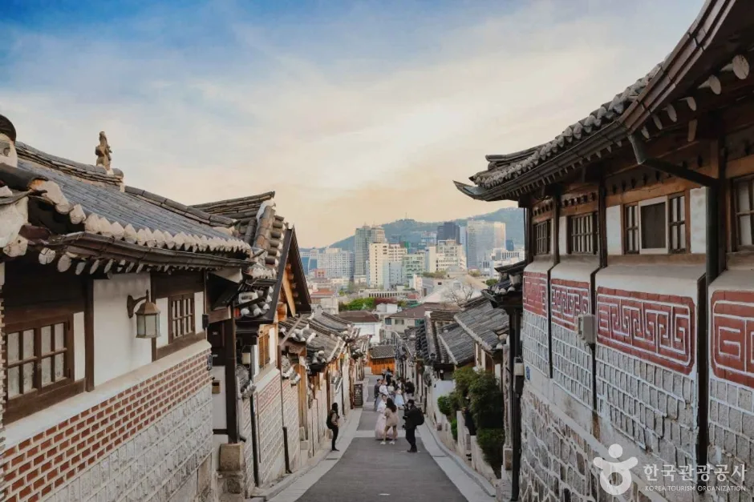
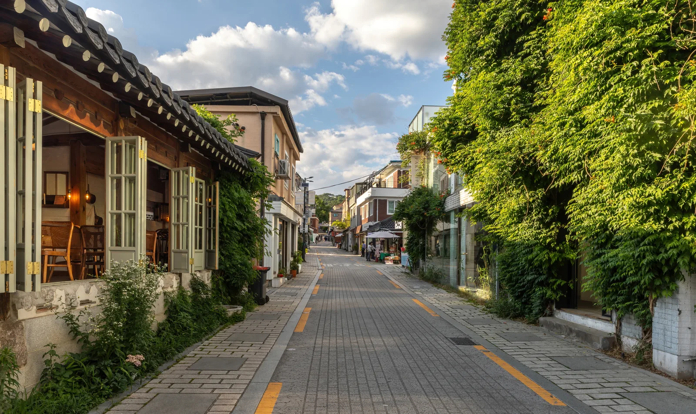
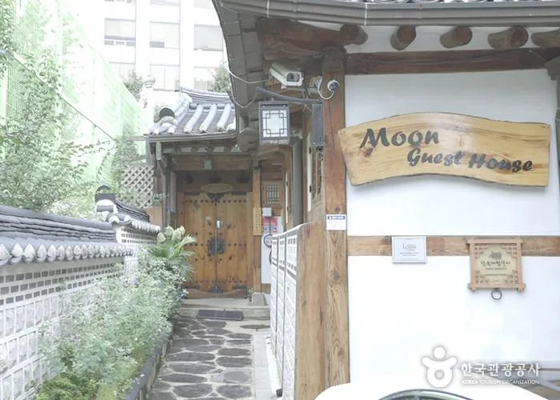
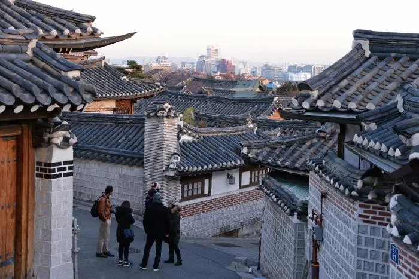
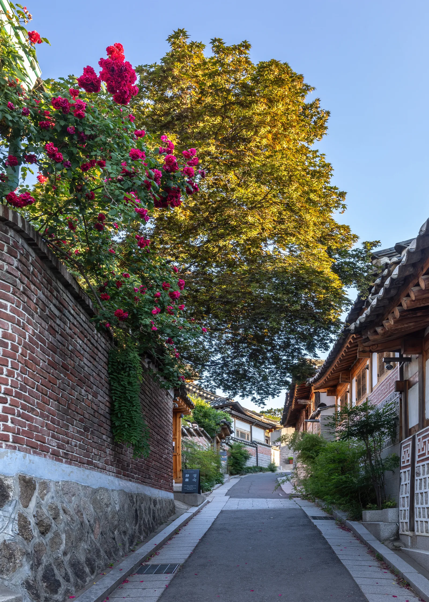
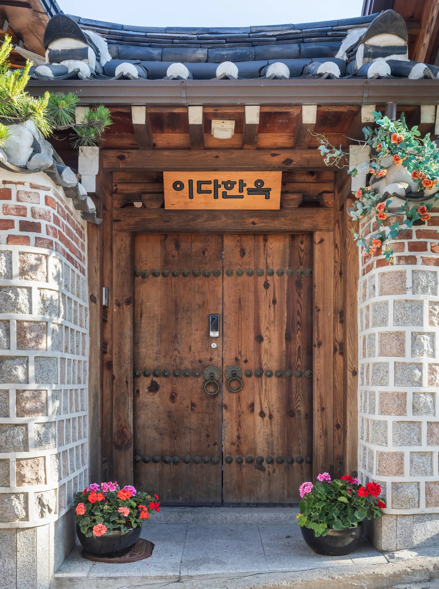
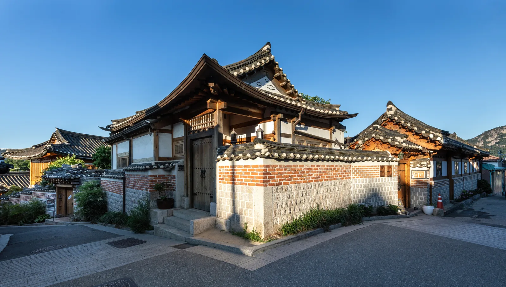

▲ 북촌한옥마을 골목. 이 일대 상당수 구간이 방문 시간이 제한된 특별관리구역이다 ⓒ 한국관광공사
북촌한옥마을은 사진이 예쁘게 나오는 골목일수록 실제로는 주민이 사는 주거지다. 그래서 종로구는 이 지역을 특별관리지역으로 지정하고, 구역별로 다른 규제를 적용하고 있다. 방문 시간을 어기면 실제로 과태료가 나온다.

▲ 계동길 골목 풍경. 카페와 상점이 늘어선 이 구간도 특별관리지역 안에 포함된다 ⓒ Wikimedia Commons (CC BY-SA 4.0)
1. 레드존 — 10시부터 5시까지, 그 외엔 과태료

▲ 북촌한옥마을 전망 포인트. 방문객이 가장 몰리는 이 구간이 레드존으로 지정됐다 ⓒ 한국관광공사
방문객 유입이 가장 많은 북촌로11길 일대(약 3만 4,000㎡)는 '레드존'으로 지정됐다. 이 구역은 오전 10시부터 오후 5시까지만 관광객 통행이 가능하다. 이 시간을 벗어나 이른 아침이나 늦은 저녁에 골목을 돌아다니면 10만 원 안팎의 과태료가 부과될 수 있다. 새벽 인적 없는 골목 사진을 노리고 일찍 갔다가는 오히려 낭패를 볼 수 있다는 뜻이다.
2. 오렌지존 — 소음이 핵심 관리 대상

▲ 북촌 골목의 게스트하우스 대문. 실제 주민과 숙박객이 함께 사는 공간이라 소음 관리가 중요하다 ⓒ 한국관광공사
북촌로5길과 계동길 일대(약 2만 6,400㎡)는 '오렌지존'으로, 시간 제한보다는 소음을 유발하는 행위에 대한 계도가 집중되는 구역이다. 큰 소리로 대화하거나 단체로 몰려다니며 떠드는 행위가 주된 관리 대상이다. 레드존만큼 엄격한 시간 제한은 없지만, 이곳도 엄연히 주민이 사는 골목이라는 점을 감안해야 한다.
3. 2026년 7월부터 — 관광버스도 못 다닌다

▲ 북촌에서 내려다본 서울 스카이라인. 이 조망을 보려는 인파와 전세버스가 만든 정체가 통행 제한의 배경이다 ⓒ 한국관광공사
종로구는 북촌로, 북촌로5길, 창덕궁1길에 이르는 약 2.3km 구간에 전세버스(관광버스) 통행 제한을 2026년 7월부터 시범 운영하고 있다. 이 구간은 전세버스의 불법 주정차가 잦고, 그로 인한 교통체증이 심했던 곳들이다. 단체 관광버스를 이용하는 여행객이라면 경복궁 주차장(전세버스 48면)이나 탑골공원 주차장(2면) 같은 대체 거점을 이용한 뒤, 도보나 셔틀로 북촌까지 접근해야 한다.

▲ 담벼락을 따라 핀 장미와 한옥 지붕. 전세버스 통행 제한은 이런 좁은 골목의 정체와 불법 주정차를 줄이려는 조치다 ⓒ Wikimedia Commons (CC BY-SA 4.0)
4. 자가용도 마을 안까지는 못 들어간다
참고 북촌한옥마을 안에는 일반 방문객을 위한 주차장이 별도로 없다. 좁고 경사진 골목이 실제 주민 생활 도로이기 때문이다. 가장 가까운 대안은 경복궁 주차장이나 정독도서관 주차장이며, 여기에 세운 뒤 걸어서 북촌 골목으로 진입하는 방식이 일반적이다.
경복궁 부설주차장 요금은 소형차 기준 1시간 3,000원, 이후 10분당 800원이다(자세한 요금은 카프리즘의 경복궁 야간관람 기사 참고). 자가용으로 간다 해도 결국 마지막 구간은 걸어야 하므로, 애초에 대중교통(3호선 안국역)을 이용하는 편이 속 편할 수 있다.

▲ 실제 주민이 사는 한옥의 대문과 문패. 골목 곳곳이 생활 공간이라 조용히 지나가는 것이 예의다 ⓒ Wikimedia Commons (CC BY-SA 4.0)

▲ 골목 모서리의 전통 한옥. 이런 집들이 실제 거주 공간이기 때문에 레드존·오렌지존 규제가 생겼다 ⓒ Wikimedia Commons (CC BY-SA 4.0)
5. 정리
체크포인트
- 레드존(북촌로11길)은 오전 10시~오후 5시만 방문 가능하다. 위반 시 과태료가 부과된다.
- 오렌지존은 소음 계도가 핵심이다. 큰 소리로 떠들지 않도록 주의해야 한다.
- 2026년 7월부터 전세버스 통행이 일부 구간에서 제한된다.
- 마을 안에는 방문객용 주차장이 없다. 경복궁·정독도서관 주차장 + 도보가 현실적인 방법이다.